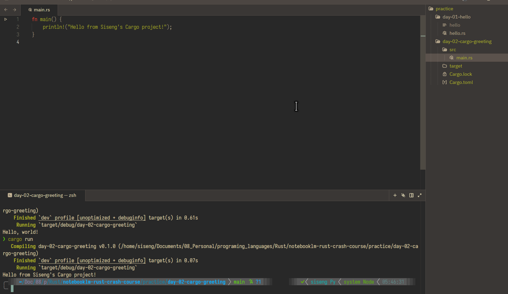

Rust Crash Course · Day 2 · Source 04
Let Cargo run the project
Create a properly structured Rust project, then build, check, format, and run it with Cargo.
Why today changes the workflow
Yesterday, rustc hello.rs compiled one loose file. That was deliberately simple: it let you see the raw Rust compile cycle. But as soon as a program has more than one file or needs a library written by someone else, you need one place that knows how the project is arranged.
Cargo is that project manager. It remembers the project’s dependencies, asks Rust’s compiler to build the code, runs the result, and follows standard Rust folder conventions. You do not use Cargo because the first program is too hard; you use it so the next hundred programs stay organised.
Course source: Tech With Tim’s Rust Programming Tutorial.
Python bridge
Cargo is closest to uv, not to Python itself
In Python, you normally use python to run a file and a tool such as uv to create a project, install packages, and run commands in that project. Rust separates those jobs too:
So: yes, broadly they have the same job. uv init creates pyproject.toml (note the spelling: .toml), just as cargo new creates Cargo.toml. Each is that ecosystem’s project manifest: a home for project metadata and dependencies.
They are not interchangeable, though. Both happen to use the TOML format, but pyproject.toml follows Python’s packaging conventions and can hold settings for many Python tools; Cargo.toml follows Cargo’s Rust-specific conventions and tells Cargo how to build the package.
One important difference: Rust must compile before it runs. Cargo calls rustc, the compiler, for you. Think of Cargo as the conductor and rustc as the instrument doing the actual compiling. You will almost always use Cargo for a real Rust project.
The project you are about to create
fn main().Cargo.lock will also appear after the first build. Cargo maintains it to record exact dependency versions; leave it to Cargo. The target/ folder is build output, not the equivalent of Python’s .venv.
Pause & inspect
What Cargo made for you
When you run cargo new, Cargo creates a ready-to-use project skeleton. At first, focus on just these two things:
pyproject.toml.fn main() function is where the program begins.uv.lock. Cargo maintains it.Why does the file end in .toml?
TOML means Tom’s Obvious Minimal Language: a small, human-readable configuration-file format. “Tom” is Tom Preston-Werner, who created the format; he is not part of Rust or Cargo. Cargo uses TOML because it is easy for people to read and edit.
Zed Lab · use this every day
First, find your place
Today has a few new ideas. We will take them one at a time. Do not run the later commands until the earlier checkpoint makes sense.
- Open
notebooklm-rust-crash-coursein Zed. - Press Ctrl + ` to open Zed’s integrated terminal.
- Type only this command, then press Enter:
pwdpwd means “print working directory.” It tells you which folder the terminal is currently using. You should see a path ending in notebooklm-rust-crash-course. If you do, you are in the right place. Pause here.
Checkpoint 1 · make the project
Ask Cargo to create the starter folder
Once pwd shows the course folder, type the next command:
cd practicecd means “change directory.” This moves the terminal into the course’s practice folder. Check it with pwd if you like; the path should now end in /practice.
Now create the project:
cargo new --vcs none day-02-cargo-greetingRead it as: “Cargo, make a new project named day-02-cargo-greeting.” The day-02 prefix keeps this practice folder aligned with Day 1’s day-01-hello folder. The unusual-looking --vcs none simply prevents Cargo from creating a second Git repository inside this course. You do not need to memorise it.
Success: the terminal says it created a binary application called day-02-cargo-greeting. Pause and look in Zed’s file list: you should now see a new folder with that name.
Checkpoint 2 · run the starter program
Enter the project, then run it
Only after the new folder exists, type:
cd day-02-cargo-greetingNow you are inside the project. This is where Cargo.toml and src/main.rs live. Run the program with:
cargo runCargo compiles the starter code and then runs it. Your one goal for this checkpoint is seeing Hello, world!. Stop there when it appears.
Checkpoint 3 · make one change
Change the greeting
Open src/main.rs in Zed. Change only the words between the quotation marks, save the file, then run cargo run again.
fn main() {
println!("Hello from Siseng's Cargo project!");
}Success: the terminal prints your own greeting. You have now edited, compiled, and run a real Cargo project.

main.rs above, and the successful cargo run result below.Only after the greeting works
Two helpful commands for later
You do not need these to complete the main task. Try them when you feel ready:
cargo fmt
cargo checkWhat happens when you run cargo fmt?
Think of it as Rust’s version of running ruff format . or black . in a Python project. Cargo reads the project’s Cargo.toml, finds the Rust source files it knows belong to the project, and hands them to the installed rustfmt formatter. Rustfmt then rewrites only presentation details—indentation, spacing, line breaks, and wrapping—to Rust’s standard style.
It does not compile or run your program, and it does not change what your program means. It only makes the code look consistent. To ask whether formatting would make any changes without editing the files, use cargo fmt -- --check.
cargo check is different: it asks Cargo whether your code can compile, without making the final executable. Both are useful habits, not hurdles to clear before your first successful run.
A tiny command map
target/.fn main() function for a binary program.Retrieval check
Which command is the best quick way to learn whether your code can compile, without making the full executable?
Finish line
Before tomorrow
Reply with: the final terminal output from cargo run. That is enough to finish Day 2; the formatting and checking commands can wait until they feel useful.
Optional extra
If you want a second explanation after completing this lesson, read the official Rust Book’s Hello, Cargo! section. It is enrichment, not additional required course work.